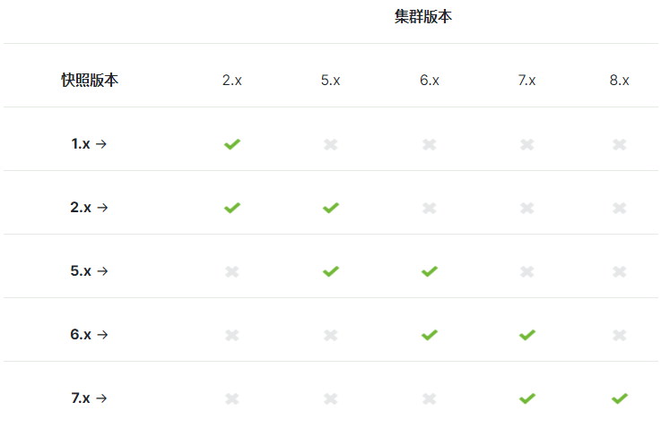

一、snapshot 简介
在网络中最重要的是数据，所有在存储应用中，定期的做数据备份还是很有必要的。而snapshot 就是Elasticsearch为了做数据备份用的api。翻译过来就是快照。
ES的高可用是通过多节点多副本来实现的，但是副本的数据并没有提供灾难性故障的保护。所有提供一个快照api是很有必要。
比如集群数据转移功能，通过snapshot 数据拷贝还是很方便的。
但是有版本还原限制，可以从低到高

二、配置snapshot repository
在创建快照(snapshot)之前，首先需要创建快照仓库(repository)，一个仓库里面可以有多个快照。而创建快照仓库需要在elasticsearch.yml配置仓库地址。
在elasticsearch.yml 中添加：
# 可以填多个仓库地址，后面添加快照时保存地址必须在下面配置地址之中 |
配置之后，需要重启ES服务
1、创建快照仓库
创建一个名为my_backup的快照仓库
# location 需要在上面配置的地址数组路径之中 |
这样就创建了一个仓库地址，之后就可以在这个仓库之后添加快照。
可以验证集群各个节点是否可以使用这个仓库：
POST http://172.16.1.236:9201/_snapshot/my_backup/_verify |
2、其他参数
创建仓库还有其他的参数可以设置：
- location
仓库地址 - compress
是否压缩，默认true, - chunk_size
是否将大文件分解成块，分解成块的单位，例子:1GB,10MB,5KB,500B，默认：null(不限制) - max_restore_bytes_per_sec
快照恢复的速度，默认：无限制 - max_snapshot_bytes_per_sec
节点出入站的速率，默认：40mb/s - readonly
仓库快照是否时只读，默认：false
3、第三方插件
以上介绍的是基于本地存储，可以配置仓库插件就可以存储在其他地方，如：
- repository-s3 支持S3 仓库
- repository-hdfs 支持HDFS 仓库
- repository-azure 支持Azure 仓库
- repository-gcs 支持 Google Cloud 仓库
三、snapshot 备份
仓库配置好了，就可以开始备份了。
1、保存集群下的所有索引快照
所有索引
# 格式：/_snapshot/仓库名称/快照名称 |
2、保存集群下的指定索引快照
指定索引,添加wait_for_completion 参数，等于true时，将等待快照保存结束时才会返回结果。反之异步返回结果
PUT http://172.16.1.236:9201/_snapshot/my_backup/snapshot_2?wait_for_completion=true |
快照是增量的，有可能很多快照依赖于过去的段，在仓库下的文件要注意了不要手动删除
3、获取指定快照状态
除了上边加的wait_for_completion 参数，可以知道快照是否完成之外，可以使用如下：
GET http://172.16.1.236:9201/_snapshot/my_backup/snapshot_2/_status |
分片的状态有：
- INITIALIZING
分片在检查集群状态看看自己是否可以被快照。这个一般是非常快的。 - STARTED
数据正在被传输到仓库。 - FINALIZING
数据传输完成；分片现在在发送快照元数据 - DONE
快照完成！ - FAILED
快照处理的时候碰到了错误，这个分片/索引/快照不可能完成了。检查你的日志获取更多信息。
4、获取所有快照信息
GET http://172.16.1.236:9201/_snapshot/my_backup/_all |
5、获取指定快照信息
获取snapshot_2 快照信息
GET http://172.16.1.236:9201/_snapshot/my_backup/snapshot_2 |
6、创建日期表达式的快照
和之前文章rollover创建日期索引一样，也是需要用日期表达式而且也需要放在尖括号中且最终转为URI编码。
# 创建格式为：snapshot-2020-09-28 转为表达式：<snapshot-{now/d}> 转为URI: %3Csnapshot-%7Bnow%2Fd%7D%3E |
7、获取通配符快照信息
获取模糊快照信息,多个用逗号隔开
GET http://172.16.1.236:9201/_snapshot/my_backup/snap* |
四、snapshot 还原
一旦你备份过了数据，恢复它就简单了：只要在你希望恢复回集群的快照ID后面加上 _restore 即可：
POST http://172.16.1.236:9201/_snapshot/my_backup/snapshot_1/_restore |
如上，就会恢复快照中的所有索引与数据，如果集群中已有快照的索引那就会报索引已存在的错误。
如果你想在不替换现有数据的前提下，恢复老数据来验证内容，或者做其他处理。可以从快照里恢复单个索引并提供一个替换的名称：
POST http://172.16.1.236:9201/_snapshot/my_backup/snapshot_1/_restore |
partial:false可选，默认：false，如果快照包含一个或多个索引没有所有主碎片可用，则整个还原操作将失败。 如果为true，则允许恢复具有不可用碎片的索引的部分快照。将只恢复快照中成功包含的碎片。所有丢失的碎片将重新创建为空 。include_global_state:false将还原快照中的所有数据流和索引，但不还原群集状态 。- 如果
ignore_unavailable:false时，当缺少topic索引时报错 include_aliases是否需要别名，true恢复，false不恢复别名- 这个
rename_pattern与rename_replacement支持正则表达式可以参考：Matcher.appendReplacement，也可以像上面直接写死。
使用正则表达式：
POST http://172.16.1.236:9201/_snapshot/my_backup/snapshot_1/_restore |
还原数据的时候，修改索引配置
POST http://172.16.1.236:9201/_snapshot/my_backup/snapshot_1/_restore |
恢复数据时，把恢复索引的副本数改为0（不需要副本）。
五、其他
快照的用法不只有这些，像配置插件使用这些因条件有限等使用到在补充
1、删除快照
DELETE http://172.16.1.236:9201/_snapshot/my_backup/snapshot_2 |
2、删除多个
DELETE http://172.16.1.236:9201/_snapshot/my_backup/snapshot_2,snapshot_3,snapshot_4 |
3、通配符删除
DELETE http://172.16.1.236:9201/_snapshot/my_backup/snaps* |
4、过期快照清理
POST http://172.16.1.236:9201/_snapshot/my_backup/_cleanup |
本文只是在同一个集群做快照保存与恢复，不同集群的快照恢复，有兴趣的同学可以看官方文档和repository插件。
参考文档：